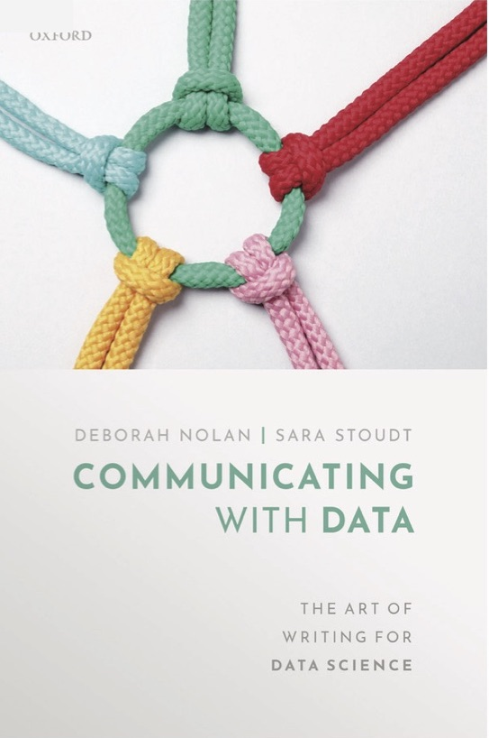

| Name | Area | Max.depth | Watershed.area | Chain.of.lakes? |
|---|---|---|---|---|
| Bde Maka Ska | 421 acres | 89.9 feet | 2,992 acres | Yes |
| Lake Harriet | 353 acres | 82. feet | 1,139 acres | Yes |
| Lake Nokomis | 204 acres | 33.1 feet | 869 acres | No |
| Cedar Lake | 170 acres | 50.9 feet | 1,956 acres | Yes |
| Lake of the Isles | 103 acres | 30.8 feet | 735 acres | Yes |
What ‘Counts’ as Statistical Communication?
Amelia McNamara @AmeliaMN
University of St Thomas
We can all agree communication is important
“Key concepts required to develop data acumen include mathematical foundations, computational foundations, statistical foundations, data management and curation, data description and visualization, data modeling and assessment, workflow and reproducibility, communication, domain-specific considerations, and ethical problem solving.”
“Key Competencies for an undergraduate Data Science Major
- Computational and Statistical Thinking
- Mathematical Foundations
- Model Building and Assessment
- Algorithms and Software Foundation
- Data Curation
- Knowledge Transference – Communication and Responsibility”
“Recommendation 2.1: Academic institutions should embrace data science as a vital new field that requires specifically tailored instruction delivered through majors and minors in data science as well as the development of a cadre of faculty equipped to teach in this new field.”
“As instructors rework individual classes based on outcomes and evaluation, it is likely that they will replace borrowed content from existing courses with original materials that fit together more naturally and better match personal educational styles or the culture of that institution or department.”
(Some) types of communication
- Visualizing data
- Writing data
- Speaking data
Exemplar programs
- U. of Michigan viz writing speaking (take three)
- Smith College viz writing speaking (take one)
- Virginia Tech viz writing speaking
- U. of California, San Diego viz writing speaking
Data Communication and Visualization
At the University of St Thomas, I teach a class which includes all three elements.
- Visualizing data (main focus)
- Writing about data
- Speaking about data
Textbook
Communicating with Data: The Art of Writing for Data Science. Deborah Nolan and Sara Stoudt.

Key elements of data communication
Audience
Who is your communication for?
Content
What is your communication about?
Both of these elements make this hard!
Audience
Are we primarily interested in an audience of other statisticians, or an audience of laypeople?
Content
Where does the content come from, and are you a disciplinary expert?
Some example assignments
Visualizing data– handmade data viz
Begin with inspiration.
In my classes, I talk about visualization as art, as well as art as visualization. (What ‘counts’?)
Visualizing data– handmade data viz
Curate a small dataset. I recommend fewer than 10 rows, but at least two variables.
Bring craft supplies!

Visualizing data– handmade data viz
Share out afterward

Visualizing data– social media
::: {style=” background-color: #F4F4F4; border-radius: 4px; flex-grow: 0; height: 14px; margin-bottom: 6px; width: 100px;“}
::: {style=” background-color: #F4F4F4; border-radius: 4px; flex-grow: 0; height: 14px; width: 60px;“}
:::
:::
:::
::: {style=” color:#3897f0; font-family:Arial,sans-serif; font-size:14px; font-style:normal; font-weight:550; line-height:18px;“} View this post on Instagram
:::
::: {style=” background-color: #F4F4F4; border-radius: 50%; flex-grow: 0; height: 20px; width: 20px;“}
::: {style=” width: 0; height: 0; border-top: 2px solid transparent; border-left: 6px solid #f4f4f4; border-bottom: 2px solid transparent; transform: translateX(16px) translateY(-4px) rotate(30deg)“}
:::
::: {style=” width: 0px; border-top: 8px solid #F4F4F4; border-right: 8px solid transparent; transform: translateY(16px);“}
::: {style=” background-color: #F4F4F4; flex-grow: 0; height: 12px; width: 16px; transform: translateY(-4px);“}
:::
::: {style=” width: 0; height: 0; border-top: 8px solid #F4F4F4; border-left: 8px solid transparent; transform: translateY(-4px) translateX(8px);“}
:::
:::
:::
::: {style=” background-color: #F4F4F4; border-radius: 4px; flex-grow: 0; height: 14px; margin-bottom: 6px; width: 224px;“}
::: {style=” background-color: #F4F4F4; border-radius: 4px; flex-grow: 0; height: 14px; width: 144px;“}
:::
:::
A post shared by Twin Cities Habitat (@tchabitat)
:::
::: {style=” background-color: #F4F4F4; border-radius: 4px; flex-grow: 0; height: 14px; margin-bottom: 6px; width: 100px;“}
::: {style=” background-color: #F4F4F4; border-radius: 4px; flex-grow: 0; height: 14px; width: 60px;“}
:::
:::
:::
::: {style=” color:#3897f0; font-family:Arial,sans-serif; font-size:14px; font-style:normal; font-weight:550; line-height:18px;“} View this post on Instagram
:::
::: {style=” background-color: #F4F4F4; border-radius: 50%; flex-grow: 0; height: 20px; width: 20px;“}
::: {style=” width: 0; height: 0; border-top: 2px solid transparent; border-left: 6px solid #f4f4f4; border-bottom: 2px solid transparent; transform: translateX(16px) translateY(-4px) rotate(30deg)“}
:::
::: {style=” width: 0px; border-top: 8px solid #F4F4F4; border-right: 8px solid transparent; transform: translateY(16px);“}
::: {style=” background-color: #F4F4F4; flex-grow: 0; height: 12px; width: 16px; transform: translateY(-4px);“}
:::
::: {style=” width: 0; height: 0; border-top: 8px solid #F4F4F4; border-left: 8px solid transparent; transform: translateY(-4px) translateX(8px);“}
:::
:::
:::
::: {style=” background-color: #F4F4F4; border-radius: 4px; flex-grow: 0; height: 14px; margin-bottom: 6px; width: 224px;“}
::: {style=” background-color: #F4F4F4; border-radius: 4px; flex-grow: 0; height: 14px; width: 144px;“}
:::
:::
A post shared by People Incorporated (@peopleincorp)
:::
Writing about data
Is Code the Best Way to Represent a Data Analysis?. Roger Peng, Simply Statistics, 2022.
“Looks okay to me”: A study of best practice in data analysis code review. Amal Abdel-Ghani, Kelly Bodwin, Amelia McNamara, Allison Theobold, and Ian Flores Siaca. ICOTS11, 2022.
Writing about data– one number story
“Keep the number of digits in a paragraph below eight.”
“You’d be over your allocation with a sentence like this: The Office of Redundancy’s budget rose 48 percent in 2013, from $700.3 million to $1.03 billion.
Think about how it could change:
Over the past year, the Office of Redundancy’s budget grew by nearly half, to $1 billion.”
– Sarah Cohen, Numbers in the Newsroom
Writing about data– one number story
Focus on one number (but use more numbers to contextualize it!)
That number might be the mean, the median, the maximum, the total…
Use simple data tools— in my class, we use spreadsheets for this assignment (sort, summarize, pivot tables).
- “Boston Wins The High School Dropout Race”
- “Massachusetts Academy of Math and Science Remains Atop the Podium”
- “10 High Schools in Massachusetts had a Perfect Graduation Rate in 2016”
- “New Century School Math Achievement Grows Again”
- “Math achievement lower for SLP students of color”
Writing about data– Wikipedia articles
Four times now, I have had students author Wikipedia articles about people who did not previously have them.
- Carmen Batanero
- Karl Broman
- Jenny Bryan
- Andreas Buja
- Catherine D’Ignazio
- Nick Horton
- Jessica Hullman
- Jeff Leek
- Thomas Lumley
- Giorgia Lupi
- Regina Nuzzo
- Tawana Petty
- Stefanie Posavec
- Julia Silge
- Julia Stewart Lowndes
- Antony Unwin
Writing about data– executive summaries
Speaking about data– lightning talk
A 5-minute talk on something that is “data-adjacent.”
- Describe a particular R package
- Talk through an interesting data analysis someone else has done. You might look through your Data Diaries for ideas, or page through sites with data journalism like The Upshot, FiveThirtyEight and ProPublica.
- Tell us about the person you wrote your Wikipedia article about
- Find a connection between a hobby and data science
Speaking about data– social media
@chelseaparlettpelleriti and I just let them💅🏼 #statsTikTok ♬ stop getting more likes than me - dee ❦
Draft from live build the other day. Posted the full 45 min build to YT. Cool but not meaningful yet.
Does this ‘count’?
Commonalities
- Think about audience
- Begin with inspiration
- Start small and simple
- Iterate and give feedback
Thank you
Tell us about the dress
- I designed the fabric
- Uploaded to Spoonflower
- Sewed the dress
I do sell some items through third-party websites:
- Housewares on Spoonflower, including wallpaper, cocktail napkins, tea towels, duvet cover, and throw pillows.
- T-shirts, mugs, and more on RedBubble
- Socks, mousepads, masks ans more on Zazzle